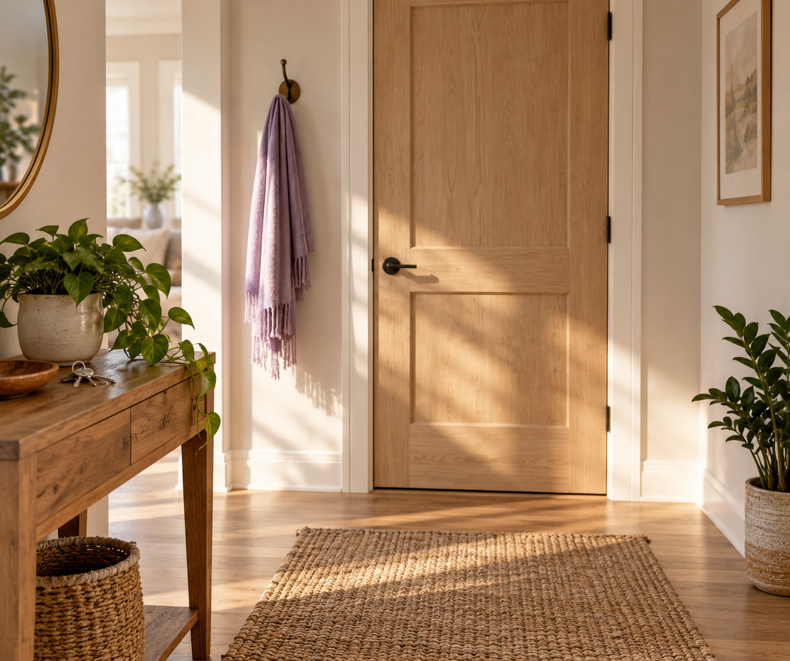

30 коротких фраз, которые помогают спокойно остановить давление и манипуляции
И 7 правил из ролика о том, как устроена психика: к каждому – как оно помогает не поддаться, когда на вас давят.
Что здесь есть
- как сказать, чтобы фраза прозвучала спокойно и твёрдо
- 30 фраз для 6 видов давления: спешка, чувство вины, «все так делают», угроза обидой, стыд, просьбы по кругу
- 7 правил из ролика
- разбор одной просьбы от начала до конца
- шпаргалка из 6 фраз и что сделать сегодня
Читается за 5 минут.
Как сказать, чтобы фраза прозвучала спокойно и твёрдо

- 1Сделайте вдох и скажите фразу обычным голосом.
- 2Не оправдывайтесь и не добавляйте длинное «потому что». Чем дольше объяснение, тем больше в нём поводов для спора.
- 3Если давят снова, повторите ту же фразу слово в слово.
- 4Не ждите согласия. Сказали – и спокойно продолжайте то, что делали.
30 фраз по 6 видам давления
Бывает, что согласия добиваются не доводами, а спешкой, виной или стыдом. Даже если человек делает это не нарочно, ответить можно спокойно. Найдите вид давления, который узнаёте, и выберите 1–2 фразы, которые звучат как вы. Нажмите на фразу, чтобы скопировать её.
Фразы даны на «ты». С коллегой или начальником меняйте форму: «Отвечу вам завтра», «Мне нужно подумать, вернусь к вам с ответом».
1Торопят: «Решай прямо сейчас» – фразы 1–5
Как это звучит: «Отвечай сейчас, потом будет поздно», «Чего тут думать?»
Как это действует: спешка не оставляет времени подумать.
- 1«Мне нужно время подумать.»
- 2«Отвечу завтра.»
- 3«Если нужно сейчас, тогда нет.»
- 4«Я не решаю такие вещи на ходу.»
- 5«Я не тороплюсь с ответом.»
2Давят на чувство вины: «После всего, что я для тебя сделала» – фразы 6–10
Как это звучит: «Я для тебя всё, а ты…», «Тебе что, трудно?»
Как это действует: прошлая помощь начинает звучать как долг.
- 6«Спасибо тебе за ту помощь. Сейчас мой ответ – нет.»
- 7«Я помню добро. Но это не повод соглашаться.»
- 8«Мне не трудно. Мне не хочется.»
- 9«Я не обязана соглашаться из благодарности.»
- 10«Давай не будем считать, кто кому сколько сделал.»
3Ссылаются на других: «Все так делают» – фразы 11–15
Как это звучит: «Все так считают», «Даже мама с этим согласна»
Как это действует: чужое мнение звучит вместо довода.
- 11«Я говорю за себя.»
- 12«Для меня это не довод.»
- 13«Пусть думают. Я считаю иначе.»
- 14«Я решу сама.»
- 15«Чужое мнение не меняет моего ответа.»
4Грозят обидой: «Откажешь – обижусь» – фразы 16–20
Как это звучит: «Если не придёшь, я обижусь» или обиженное молчание после отказа
Как это действует: отказ начинает казаться виной за чужие чувства.
- 16«Мне жаль, если обидишься. Мой ответ – нет.»
- 17«Понимаю, что тебе неприятно. И всё равно нет.»
- 18«Решение я не поменяю.»
- 19«Я тебя люблю, и мой ответ – нет.»
- 20«Обида не заставит меня передумать.»
5Стыдят: «Нормальная женщина бы…» – фразы 21–25
Как это звучит: «Нормальная мать так не делает», «В твоём возрасте пора бы…»
Как это действует: вместо разговора о деле – сравнение, после которого хочется оправдываться.
- 21«У меня своя норма.»
- 22«Не сравнивай меня, пожалуйста.»
- 23«Я делаю так, как подходит мне.»
- 24«Скажи, что тебе нужно, без сравнений.»
- 25«Мне неприятен этот тон.»
6Не слышат «нет»: просят снова и снова – фразы 26–30
Как это звучит: та же просьба в пятый раз, другими словами
Как это действует: каждый повтор утомляет, и отказывать всё труднее.
- 26«Я уже ответила.»
- 27«Ответ тот же.»
- 28«Нет. И это окончательно.»
- 29«Больше это не обсуждаю.»
- 30«Давай сменим тему.»
7 правил из ролика: на что опереться, когда давят
Под давлением часто отвечают на автомате: из чувства вины соглашаются, от усталости уступают, из страха обидеть молчат. Каждое правило из ролика помогает остановиться на секунду и ответить так, как вы решили сами.
1Чувство – не приказ. Можно злиться и не кричать.
Под давлением. Вина, страх и неловкость не обязывают соглашаться. Чувство вины или благодарности можно заметить и всё равно сказать то, что решили. И злость тоже: можно злиться и ответить спокойно, без крика.
Фраза №9«Я не обязана соглашаться из благодарности.»
2Усталость часто притворяется ленью. Сначала отдых, потом выводы о себе.
Под давлением. Уставшему человеку проще сказать «да», чем спорить. Важное решайте, когда отдохнёте. А упрёк в лени – ещё не правда о вас.
Фраза №2«Отвечу завтра.»
3Тело замечает раньше головы. Если рядом с человеком сжимаются плечи, это тоже информация.
Под давлением. Сжались плечи, сбилось дыхание, хочется побыстрее согласиться – это может быть знаком, что разговор давит. Голова поймёт позже, а паузу можно взять сразу.
Фраза №1«Мне нужно время подумать.»
4Любовь не нужно зарабатывать удобством.
Под давлением. «откажешь – обижусь» держится на страхе потерять тепло. Отказ не отменяет любви, а удобство её не покупает.
Фраза №19«Я тебя люблю, и мой ответ – нет.»
5Изменить другого невозможно. Можно изменить то, что вы рядом с ним терпите.
Под давлением. Переубедить того, кто давит, обычно не получается. Можно решить, что вы больше не терпите: повторные уговоры, объяснения по кругу.
Фраза №29«Больше это не обсуждаю.»
6Маленькое действие сегодня весит больше большого плана на понедельник.
Под давлением. Не нужно перестраивать все отношения сразу. Одна фраза в одном разговоре – уже действие, а не план. С чего начать сегодня – в шпаргалке ниже.
7Просить о помощи – не слабость, а навык. Ему можно научиться в любом возрасте.
Под давлением. Со стороны давление видно лучше. Расскажите тому, кому доверяете, как прошёл разговор.
Как попросить«Послушай, мне нужно твоё мнение со стороны.»
Разбор: одна просьба, четыре вида давления
Свободных денег у вас нет, и вы уже решили, что в долг не дадите.
Подруга«Займи 20 тысяч до пятницы, очень надо, прямо сейчас.»
Вы · спешка«Если нужно сейчас, тогда нет.»
Подруга«Тебе что, трудно? Я тебе в прошлом году помогла.»
Вы · вина«Спасибо тебе за ту помощь. Сейчас мой ответ – нет.»
Подруга«Ну ясно. Я думала, мы подруги.»
Вы · обида«Мне жаль, если обидишься. Мой ответ – нет.»
Через час, в мессенджере:
Подруга«Ну может, хотя бы 10?»
Вы · просьба по кругу«Я уже ответила.»
Что произошло: подруга пробовала разные способы, а ответ оставался тем же. Вы не доказывали и не оправдывались, и отбивать доводы не пришлось.
Если давление сопровождается угрозами, вас пугают или контролируют каждый шаг, фраз мало. Это повод обратиться к специалисту и позаботиться о своей безопасности.
Шпаргалка из 6 фраз
По одной на каждый вид давления. Сделайте скриншот, чтобы они были под рукой.
«Если нужно сейчас, тогда нет.»
«Спасибо тебе за ту помощь. Сейчас мой ответ – нет.»
«Я решу сама.»
«Я тебя люблю, и мой ответ – нет.»
«У меня своя норма.»
«Я уже ответила.»
Что сделать сегодня и в следующий раз
Если «нет» застревает в горле
Случается и так: фраза известна, а вслух всё равно звучит «ладно». Согласилась – и потом весь вечер злость на себя. Если так происходит не раз, полезно понять, откуда это берётся: иногда за этим стоит старая привычка из тех времён, когда отказывать было небезопасно.
Разобраться в этом – первый шаг к спокойному «нет». С этого начинается «Свобода от прошлого» – первый эфир интенсива «Система перехода в новую реальность за 24 часа». Записаться – в форме ниже, по промокоду ЩИТ.

Онлайн-интенсив · 3 эфира
Система перехода в новую реальность за 24 часа
Анна Сабаврач, психотерапевт
- 10 летпрактики
- 7000+клиентов
- 3 эфирас домашними заданиями
Что будет
- 1Эфир 1«Свобода от прошлого»Находим и убираем то, что годами держало вас на месте.
- 2Эфир 2«Энергия и уровень счастья»Видите, куда каждый день утекают силы, и возвращаете себе энергию.
- 3Эфир 3«Как получать желаемое без откатов и саботажа»Ставите свою цель и получаете пошаговый план.
К чему приведёт
- найдёте, откуда взялась привычка уступать давлению
- вернёте себе силы, которые уходили на чужие ожидания
- получите пошаговый план, как говорить «нет» и сохранять отношения
Для кого
- вам трудно отказать, когда на вас давят
- вы соглашаетесь, а потом жалеете
- вы чувствуете вину, когда отказываете
Подарки сразу после регистрации
- Демо-сессия EMDR-терапиидля быстрой проработки своего травматического запроса, снятия внутреннего напряжения, улучшения состояния и изменения реакций психики без откатов.
- Расстановочная практика «Почему у меня до сих пор нет того, чего я хочу», 20 минутпоказывает скрытые причины, из-за которых желаемое не приходит.
- Тест «Где мой затык» с расшифровкойпокажет, какая установка держит вас на месте.
- Чат «Автомагически»ежедневная практика внимания в кругу единомышленников.
участие по промокоду ЩИТ
Форма откроется здесь же, подарки придут сразу после регистрации.